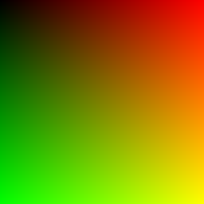
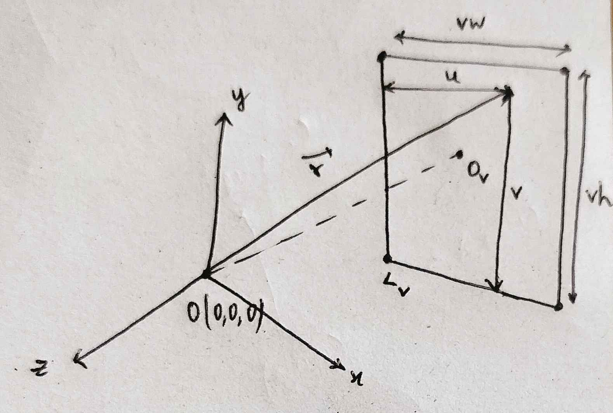

hey there! i have recently started reading Ray Tracing in One Weekend and have been trying to implement it in golang, so i thought of writing a blog series on how to build a tiny path tracer in golang.
if you're into video games then you probably might have heard this term earlier in the context of graphics cards.
video games (i.e. real-time computer graphics) have long used rasterization technique to display three-dimensional objects on a two-dimensional screen, mainly due to the fact that it is very efficient. with rasterization, objects on the screen are created from a mesh of virtual triangles, or polygons, that create 3D models of objects.
ray tracing is another computer graphics technique, but it simulates how light behaves in the real world to create realistic images. in the real world, humans see objects because of the light from the source that is been reflected by that object. in ray tracing, rays are sent from a camera to each pixel and see how the pixels (i.e. part of the objects) behave with the light rays and accordingly, the color is decided for that pixel. the reason for doing so is because not all light rays reach the camera and wouldn't be responsible for rendering the image.
well, then why is the title of the blog "writing a path tracer" and not "writing a ray tracer"? well, we would be using the path tracing technique. path tracing is sorta like a form of ray tracing but it traces multiple rays per pixel to a surface and then calculates how they will be statistically scattered. path tracing creates very realistic images.
Every beautiful light bounce costs a slice of your computer's brain power
after the renderer statistically figures out color (and other correlating quantities like brightness, and intensity), we need a way to view the output. the simplest way to do so is to write the data to a file and convert it to a .png.
PPM file format is the one which suits well in our usecase and is the easiest to work with. each PPM file follows a structure which looks something like:
P3
num_of_cols num_of_rows
max_color
...rgb_valuesex:
P3
2 2
255
255 0 0
0 255 0
0 0 255
255 255 0
this renders a tiny image of 2x2 pixels with red, green, blue and yellow
squares accordingly. most of modern linux distributions and OSX come with
default image viewers that support PPM files, just run
open file.ppm. if your operating system doesn't support PPM
files by default then use an online PPM viewer -
https://0xc0de.fr/webppm/
as we're now a bit comfortable with the PPM file format, let's render a simple gradient:
package main
import (
"fmt"
"os"
)
func main() {
f, err := os.Create("test.ppm")
if err != nil {
panic(err.Error())
}
width := 256
height := 256
_, err = fmt.Fprintf(f, "P3\n%d %d\n255\n", width, height)
if err != nil {
panic(err.Error())
}
for j := range height {
fmt.Printf("scanlines remaining: %d\n", height-j)
for i := range width {
r := float64(i) / float64(width-1)
g := float64(j) / float64(height-1)
b := 0.0
ir := int(255.99 * r)
ig := int(255.99 * g)
ib := int(255.99 * b)
_, err := fmt.Fprintf(f, "%d %d %d\n", ir, ig, ib)
if err != nil {
panic(err.Error())
}
}
}
fmt.Println("done")
}it might not be a straightforward task to understand what the above code does, but let's break it down. generally, RGB values are internally represented in the range of 0.0 to 1.0 and later scaled to the range from 0 to 255.
the reason for that is 0 - 255 is an 8-bit value, so you can only store 256 different values whereas 0.0 - 1.0 is a range of floating point values, which are vastly higher in resolving powers. you might want the output of a render to be in 8-8-8 bit RGB format, but the calculations to get there you want to do with far more accuracy than this.
and the reason for multiplying with 255.99 instead of 255 is to ensure proper rounding and prevent potential off-by-one errors.
the script also has a progress indicator, which is useful in later on stages where it would take minutes to render a scene and it acts like an indicator to know whether our script got stuck in an infinite loop.
on running the script, a new file named test.ppm is created.
on opening that file, you should see a gradient which varies from black
(in the top-left corner) to yellow (in the bottom-right corner).


that's a simple representation of the virtual camera setup used in ray/path tracing. let's understand it a bit better.
by now, we all have a basic understanding of how ray tracing works - rays are shot from the camera and they interact with different pixels, and accordingly, color is decided.
in the above figure, O is the camera origin (i.e. where the
virtual camera is). x, y and z are
the axes of the camera and the rectangular screen behind is the viewport,
which is kinda like a rectangular "viewing window" through which you see
the scene from the point of view of the camera and
Ov is the center of the viewport and
Lv is the lower left corner of the the viewport.
vw and vh are the viewport width and viewport
height respectively. if the pixels are equally spaced then the viewport
will have the same aspect ratio as the image.
the distance between origin of the camera and center of the viewport is called focal length.
i've chose the lower left corner of the viewport to be origin of the viewport to keep the viewport axes and camera axes to be in the same direction i.e. +y is vertically upwards and +x is pointing outwards. in the book, dr. shirley took upper left corner as the origin of the viewport.
the location of any pixel can be easily found with the help of some simple vector math:
r = (lower left corner) + (horizontal * u) + (vertical * v) - origin
where horizontal = (vw, 0, 0), vertical = (0, vh, 0) and origin is the camera origin
before starting to implement it in code, let's make a struct
Vector which will hold all the utility functions such as
adding two vectors, subtracting two vectors, dot product and so on.
package main
import (
"math"
)
type Vector struct {
X, Y, Z float64
}
func NewVector(x, y, z float64) Vector {
return Vector{
X: x,
Y: y,
Z: z,
}
}
func (v Vector) AddVector(u Vector) Vector {
return Vector{v.X + u.X, v.Y + u.Y, v.Z + u.Z}
}
func (v Vector) AddScalar(s float64) Vector {
return Vector{v.X + s, v.Y + s, v.Z + s}
}
func (v Vector) SubtractVector(u Vector) Vector {
return Vector{v.X - u.X, v.Y - u.Y, v.Z - u.Z}
}
func (v Vector) MultiplyComponents(u Vector) Vector {
return NewVector(v.X*u.X, v.Y*u.Y, v.Z*u.Z)
}
func (v Vector) MultiplyScalar(s float64) Vector {
return Vector{v.X * s, v.Y * s, v.Z * s}
}
func (v Vector) DivideScalar(s float64) Vector {
return v.MultiplyScalar(1 / s)
}
func (v Vector) DotProduct(u Vector) float64 {
return (v.X * u.X) + (v.Y * u.Y) + (v.Z * u.Z)
}
func (v Vector) Length() float64 {
return math.Sqrt(v.X*v.X + v.Y*v.Y + v.Z*v.Z)
}
func (v Vector) UnitVector() Vector {
return v.DivideScalar(v.Length())
}
let's brief through the code a bit
AddVector - adds two vectors
AddScalar - adds a scalar to every component of the
vector
SubtractVector - subtracts two vectors
MultiplyComponents - corresponding components of the two
vectors are multiplied and the resultant is also a vector
MultiplyScalar - a scalar is multiplied to every
component of the vector
DivideScalar - every component of the vector is divided
by a scalar
DotProduct - returns dot product of two vectors
Length - returns length of a vector
UnitVector - returns an unit vector in the direction of
that vector i.e. normalizes the vector
now let's actually implement the camera setup in code
package main
import (
"fmt"
"os"
)
func main() {
f, err := os.Create("test.ppm")
if err != nil {
panic(err.Error())
}
imageWidth := 256
imageHeight := 256
viewportHeight := 2.0
viewportWidth := 2.0
focalLength := 1.0
origin := NewVector(0, 0, 0)
horizontal := NewVector(viewportWidth, 0, 0)
vertical := NewVector(0, viewportHeight, 0)
lowerLeftCorner := origin.SubtractVector(horizontal.DivideScalar(2)).SubtractVector(vertical.DivideScalar(2)).SubtractVector(NewVector(0, 0, focalLength))
_, err = fmt.Fprintf(f, "P3\n%d %d\n255\n", imageWidth, imageHeight)
if err != nil {
panic(err.Error())
}
for j := imageHeight - 1; j >= 0; j-- {
fmt.Printf("scanlines remaining: %d\n", j)
for i := 0; i < imageWidth; i++ {
u := float64(i) / float64(imageWidth-1)
v := float64(j) / float64(imageHeight-1)
vec := lowerLeftCorner.AddVector(horizontal.MultiplyScalar(u)).AddVector(vertical.MultiplyScalar(v)).SubtractVector(origin)
unitVec := vec.UnitVector()
t := 0.5 * (unitVec.Y + 1)
color := NewVector(1, 1, 1).MultiplyScalar(1.0 - t).AddVector(NewVector(0.5, 0.7, 1.0).MultiplyScalar(t))
ir := int(255.99 * color.X)
ig := int(255.99 * color.Y)
ib := int(255.99 * color.Z)
_, err := fmt.Fprintf(f, "%d %d %d\n", ir, ig, ib)
if err != nil {
panic(err.Error())
}
}
}
fmt.Println("done")
}
i've set the size of the image to be 256x256 pixels i.e. aspect ratio is 1:1 so aspect ratio of the viewport must also be 1:1. the size of the viewport if 2x2 world units.
the focal length of the camera is set to be 1 unit and the camera origin is at (0, 0, 0).
the lower left corner is calculated with the help of
horizontal, vertical and
focal length via the following formula
lower left corner = origin - (horizontal/2) - (vertical/2) - (0, 0, focal length)
as origin of the viewport is at the lower left corner, j is
started from imageHeight - 1 instead of 0. if
you consider upper left corner to be as the origin for viewport then you
would start j from 0 and also take care about the differences
in direction of the axes of the viewport and axes of the camera.
vec is the current position of the pixel wih respect to
origin, and it is calculated via the previously mentioned formula
over here, we using a computer graphics techinque called linear blend or liner interpolation or lerp between two values to create a gradient between white and a shade of blue. the gradient from white to blue from bottom to top i.e. it depends on y-coordinate of the current pixel's location.
blended value = (1 - t) * (start value) + t * (end value); 0.0 ≤ t ≤ 1.0
as the gradient varies vertically, t is evaluated from
y-coordinate of current pixel
t = 0.5 * (y + 1); y is y coordinate of an unit vector in the direction of the vector i.e. -1.0 ≤ y ≤ 1.0
y ranges from -1.0 to 1.0 but t must in between
0 and 1 so as to map y with the equivalent t in
the range of 0 to 1, it is subtracted by 1 and multiplied with 0.5.
and final blended value is represented in the form of a vector as (R, G,
B) which makes it a little simple. you can even have a separate struct
named Color for representing color as a vector but as of
right now, this works.
on running the script, you get a beautiful gradient
the program is pretty much done but let's do lil' refactoring. let's make
a new struct named Ray which would act like a ray, which
would be very much required in the next blog.
package main
type Ray struct {
Origin Vector
Direction Vector
}
func NewRay(origin, direction Vector) Ray {
return Ray{
Origin: origin,
Direction: direction,
}
}
func (r Ray) At(t float64) Vector {
return r.Origin.AddVector(r.Direction.MultiplyScalar(t))
}every ray can be mathematically represented as follows
P(t) = Q + td; where Q is origin and d is direction
let's make a function which takes in a ray as a parameter returns the corresponding color for it based on its interactions with the pixels.
func RayColor(r Ray) Vector {
unitVec := r.Direction.UnitVector()
t := 0.5 * (unitVec.Y + 1)
color := NewVector(1, 1, 1).MultiplyScalar(1.0 - t).AddVector(NewVector(0.5, 0.7, 1.0).MultiplyScalar(t))
return color
}and let's update main.go to support these recent changes
vec := lowerLeftCorner.AddVector(horizontal.MultiplyScalar(u)).AddVector(vertical.MultiplyScalar(v)).SubtractVector(origin)
ray := NewRay(origin, vec)
color := RayColor(ray)and that's how to write a simple camera setup and render a gradient. this is pretty much the basics of writing a path tracer.
got any thoughts related to this blog post? drop 'em over here - discussion